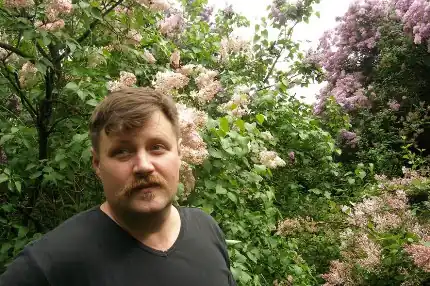

Іван-В'ячеслав Сергієнко – один із співзасновників Мистецької сотні, сценарист, кінорежисер, поет, математик.
Народився 7 грудня 1970 року в Києві. Закінчив механіко-математичний факультет КНУ ім. Тараса Шевченка та Віденську кіноакадемію.
Працював закордонним кореспондентом Національної телекомпанії України в Німеччині та Австрії. Був виконавчим продюсером кінокомпанії "Пре продакшн" у Києві та керівником у продюсерському центрі НКХФ ім. Олександра Довженка. Співавтор та виконавчий продюсер мультимедійного івенту "Прагнемо, аби пам'ятали" – до 25-річчя Чорнобильської катастрофи". Співзасновник та режисер Міжнародного фестивалю патріотичної пісні в Україні "Рутенія". Співавтор та співрежисер документального фільму "Музей неминучости". Режисер-постановник та автор сценарію ігрового фільму "Перекотиполе" (2012). Помер 19 липня 2020 року. Похований на Байковому кладовищі поруч з рідними.